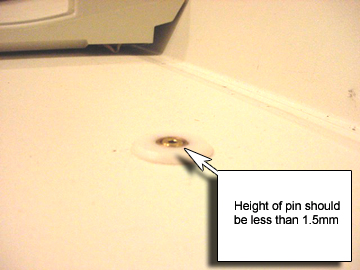

Operating Documentation
Direction 5133315-3, Rev# 14
Signa EXCITE HD 1.5T Service Methods
Module Version 1.0, Version Date 5/15/07
Operating Documentation |
Drive the cradle into the magnet to expose the Cradle Release Pin. Verify that the Release Pin is Flush with the table, or extends less than 1.5mm from the table. See Illustration 1. If adjustments are needed, see Cradle Release Pin Height Adjustment.
Illustration 1: Cradle Release Pin Check
